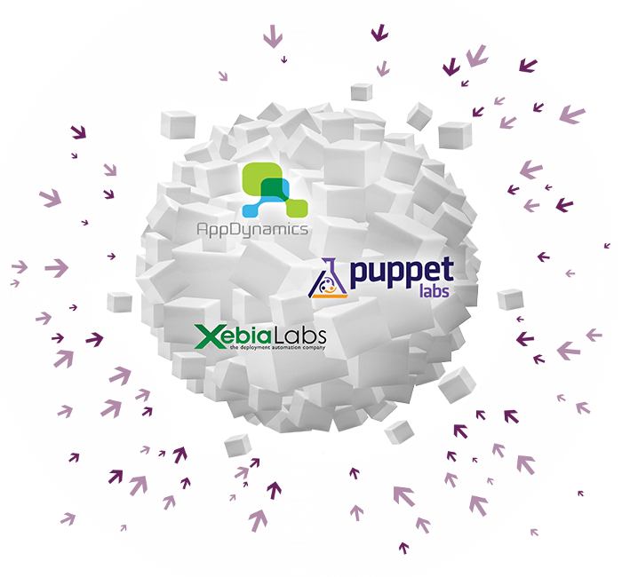

DevOps ?
Le but du mouvement DevOps est de fluidifier les processus en créant une synergie entre les équipes d’exploitation et les équipes de développement qui doivent atteindre un but commun : délivrer le meilleur logiciel aux clients de l’entreprise. DevOps a pour objectif de supprimer les frictions, voire les blocages, qui freinent la productivité du systême d’information de l’entreprise.
Vous voulez en savoir plus ? Téléchargez la brochure
Notre offre de conseil et de réalisation

Xebia peut vous accompagner pour chacune des zones de contact de manière unitaire à travers une démarche méthodologique et un outillage technique. L’ensemble des chantiers peut également être mené de front, avec une vision cible ambitieuse : l’équipe Ulteam.
Sensibilisaiton à DevOps
Kick-Strater DevOps
Audit DevOps
Réalisation d'un chantier DevOps
Vers l'équipe ultime DevOps
Sensibilisation à DevOps
Cet atelier est destiné aux managers d’équipes et de départements. Il permet de poser les fondations d’une démarche DevOps. L’atelier s’articule en trois temps :
- Présentation de l’historique et des concepts du mouvement DevOps ainsi que de notre modèle de maturité et des différents axes d’implémentation.
- Ateliers de mise en œuvre, notamment un groupe de travail autour d’outils d’analyse (matrice SWOT).
- Retranscription de l’ensemble des notes et échanges et proposition d’un plan d’action.
Kick-starter Devops
Cette mission vous permettra de démarrer un chantier DevOps en vous focalisant sur les aspects organisationnels. Nous introduisons DevOps comme une démarche d’amélioration continue et nous mettons en place les cérémonies nécessaires pour implanter durablement cette approche au sein de votre organisation.
Nottre approche comprend :
- des entretiens avec les opérationnels représentants des équipes Dev et Ops,
- l’analyse de l’ensemble des étapes entre livraison du code et mise en production (Value Stream Map),
- des rétrospectives ciblées pour identifier les pistes d’amélioration,
- la formalisation des bonnes pratiques à prendre en compte dès les développements,
- la mise en place d’un tableau de suivi (Kanban) pour les Ops,
- des ateliers de sensibilisation,
- l’organisation d’un Vis ma Vie entre Dev et Ops.
Audit DevOps
Nous vous aidons à positionner votre organisation sur un modèle de maturité DevOps afin de définir les axes d’amélioration qui vous permettront de rendre vos processus plus fluides et mieux sécurisés. Cette mission s’intéresse aussi bien aux processus humains qu’aux outils utilisés au sein de votre organisation.
Notre approche comprend :
- des entretiens avec les opérationnels,
- l’analyse de l’ensemble des étapes entre livraison du code et mise en production (Value Stream Map),
- l’audit des outils existants (cartographie de l’architecture, usine logicielle, outil de déploiement, monitoring, automatisation, troubleshooting),
- la restitution croisée technique et organisationnelle.
Réalisation d'un chantier DevOps
Nous vous aidons à positionner votre organisation sur un modèle de maturité DevOps afin de définir les axes d’amélioration qui vous permettront de rendre vos processus plus fluides et mieux sécurisés. Cette mission s’intéresse aussi bien aux processus humains qu’aux outils utilisés au sein de votre organisation.
Notre approche comprend :
- des entretiens avec les opérationnels,
- l’analyse de l’ensemble des étapes entre livraison du code et mise en production (Value Stream Map),
- l’audit des outils existants (cartographie de l’architecture, usine logicielle, outil de déploiement, monitoring, automatisation, troubleshooting),
- la restitution croisée technique et organisationnelle.
Vers l'équipe Ulteam
Imaginez une équipe agile qui considèerrait qur son sprint est terminé lirsque le contenu est en produciton. Chez Xebia, c'est ce que nous appelons l'équipe ultime; elle intègre l'ensemble des compétences nécéssaires pour délivrer la valeur directement en production sans dépendre d'équipes tierces.
La démarche comprend :


Cas client
Nos partenaires
